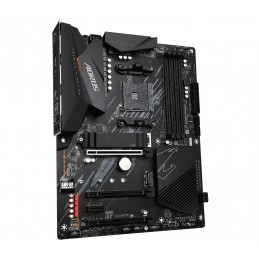

Comment fonctionne l'ESP32 ?
L'ESP32 fonctionne grâce à un processeur double cœur, ce qui lui permet de gérer plusieurs tâches simultanément sans perte de performance. Il intègre également des modules de communication sans fil, notamment le Wi-Fi et le Bluetooth, qui permettent de l'utiliser dans des applications IoT où la connectivité est essentielle.
Le microcontrôleur peut interagir avec divers capteurs, contrôles de moteurs et autres périphériques électroniques, ce qui le rend extrêmement versatile pour une large gamme de projets.
